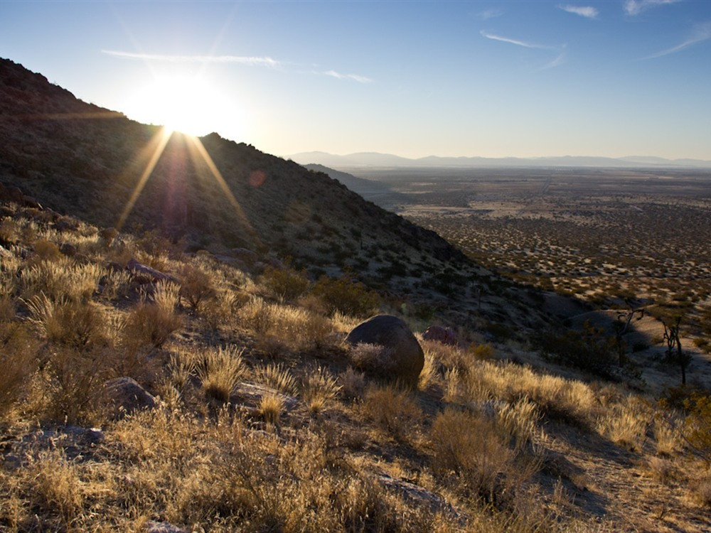

High desert park featuring rolling Joshua tree woodland, seasonal wildflowers, and panoramic views from a prominent butte rising above the Antelope Valley.
How to Get There
From Lancaster (15 mi): Take E Avenue J east from Lancaster and follow signs to the park entrance, continuing south to reach the main parking and trailhead areas.
Overview
Saddleback Butte State Park is a California state park of about 2,955 acres on the western edge of the Mojave Desert, centered on a granite butte that rises to 3,651 feet above the Antelope Valley. The park was established in 1960 to protect the butte and its native Joshua tree woodland, with conservationist Jane S. Pinheiro instrumental in persuading the state to set the land aside. It was first named Joshua Tree State Park but was renamed to avoid confusion with Joshua Tree National Monument. Visitors come to hike to the summit for views across the valley, walk among the Joshua trees, see spring wildflowers and camp under dark desert skies.
Access
The park is about 15 miles east of Lancaster, near the community of Hi Vista, and is reached from Highway 14 by taking the Avenue K exit east to 170th Street East. The campground entrance comes first, and the day-use area is about a mile farther near Avenue J. Nearly all visitors arrive by car, and there is no public transportation. Summer heat is severe, so bring plenty of water and plan hikes for the morning. Check posted day-use hours, as the gate may be locked in the late afternoon.
Seasons
Spring, from about February through May, is the best time to visit, when wildflowers can bloom across the desert floor. Fall, especially October and November, is pleasant for hiking, though temperatures can change quickly. Summers are very hot, with average highs near 95°F and occasional peaks much higher, and the butte is best avoided in the afternoon. Winters are cool, with frost at night and occasional snow, and the park is quiet. The visitor center is open weekends from September through May.
Things to Do
Explore a Desert Landmark Rising Above the Antelope Valley
Saddleback Butte State Park is centered around a prominent desert butte that rises dramatically above the floor of the western Mojave Desert near Lancaster, California. The park protects rugged desert landscapes, Joshua tree habitat, wildflower viewing areas, and panoramic viewpoints that showcase the beauty of the Antelope Valley and surrounding mountains.
Hike to the Summit of Saddleback Butte
One of the park's most popular activities is hiking to the summit of Saddleback Butte. Visitors are rewarded with sweeping views of the Antelope Valley, San Gabriel Mountains, Tehachapi Mountains, and vast stretches of Mojave Desert terrain. The summit provides some of the most impressive viewpoints in the region.
Enjoy Seasonal Wildflower Displays
Following wet winters, the park can host colorful displays of desert wildflowers, including California poppies, desert gold, lupines, and other native species. Spring is a particularly scenic time to visit and experience the desert landscape in bloom.
Observe Mojave Desert Wildlife
Saddleback Butte State Park supports a variety of desert wildlife, including jackrabbits, coyotes, lizards, hawks, roadrunners, and numerous bird species. Wildlife viewing and birdwatching opportunities can be found throughout the park's trails and open areas.
Enjoy Camping and Stargazing
The park offers a campground that allows visitors to experience the desert environment after sunset. With relatively low levels of light pollution compared to nearby urban areas, Saddleback Butte is a popular location for stargazing, astrophotography, and enjoying clear desert night skies.
Photograph Unique Desert Landscapes
The park's rocky outcrops, Joshua trees, seasonal wildflowers, and elevated viewpoints make it a favorite destination for landscape photographers. Sunrise and sunset often provide dramatic lighting conditions across the desert and surrounding mountain ranges.
Top Trails
Saddleback Butte Trail
Length: Approximately 3 miles round trip
Elevation Gain: About 900 feet
Difficulty: Moderate
This signature trail climbs to the summit of Saddleback Butte and provides panoramic views of the Antelope Valley and Mojave Desert. The route passes through native desert vegetation and offers excellent opportunities for photography and wildlife observation.
Desert Nature Trail
Length: Approximately 0.75 miles loop
Elevation Gain: Minimal
Difficulty: Easy
This short interpretive trail introduces visitors to the park's desert ecosystem, highlighting native plants, wildlife habitats, and geological features. It is ideal for families and visitors seeking a leisurely walk.
Rock Formation Trail
Length: Approximately 1.5 miles round trip
Elevation Gain: Moderate
Difficulty: Easy to Moderate
This trail explores some of the park's distinctive granite formations and offers scenic views of the surrounding desert landscape. Wildflowers are commonly observed along the route during favorable spring conditions.
Campground Access Trail
Length: Approximately 1 mile round trip
Elevation Gain: Minimal
Difficulty: Easy
This easy route connects visitor areas with nearby viewpoints and provides opportunities for birdwatching, wildlife viewing, and enjoying the quiet desert environment.
Visitor Centers
The park has a visitor center. It is open on weekends from about September through May, and weekday visits may be arranged by calling the park in advance at (661) 946-6900. Outside those times, a short self-guided nature trail near the day-use area offers a good introduction to the park. Information and trail maps are also available on the California State Parks website.
Camping and Lodging
The park has a campground of 37 first-come, first-served sites, most with tables, grills, fire rings and shade ramadas, along with potable water and flush restrooms but no showers. A group camp for larger parties can be reserved in advance through ReserveCalifornia. Hotels, motels and restaurants are available in Lancaster and Palmdale, each within a short drive. Visitors looking for more campground options can also look to the Angeles National Forest to the south, within about one to two hours. Spring wildflower weekends are the busiest times, so book rooms and campsites ahead.
Sources: California State Parks official Saddleback Butte State Park information, including details on hiking trails, camping, wildlife viewing, wildflower displays, desert ecosystems, and visitor amenities.
https://www.parks.ca.gov/?page_id=618https://www.parks.ca.gov/?page_id=618
Additional information verified through California State Parks visitor resources covering summit hikes, Mojave Desert habitats, recreational opportunities, scenic viewpoints, and seasonal wildflower displays within Saddleback Butte State Park.
https://www.parks.ca.gov/https://www.parks.ca.gov/
This article uses material from the Wikipedia articles and official tourism pages for the Saddleback Butte State Park, which are released under the Creative Commons Attribution-Share-Alike License 3.0. Additional information from California State Parks.
